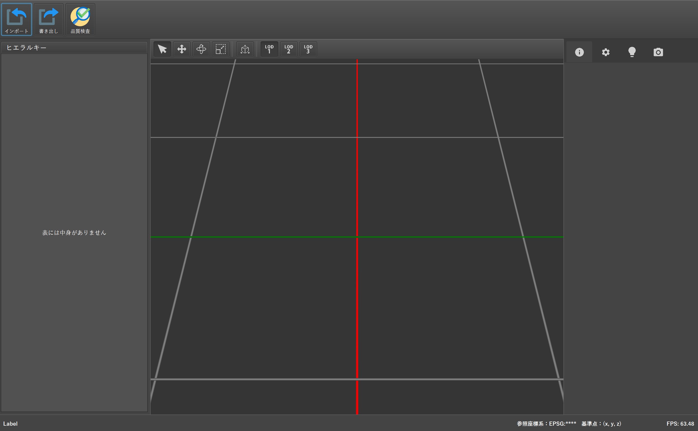
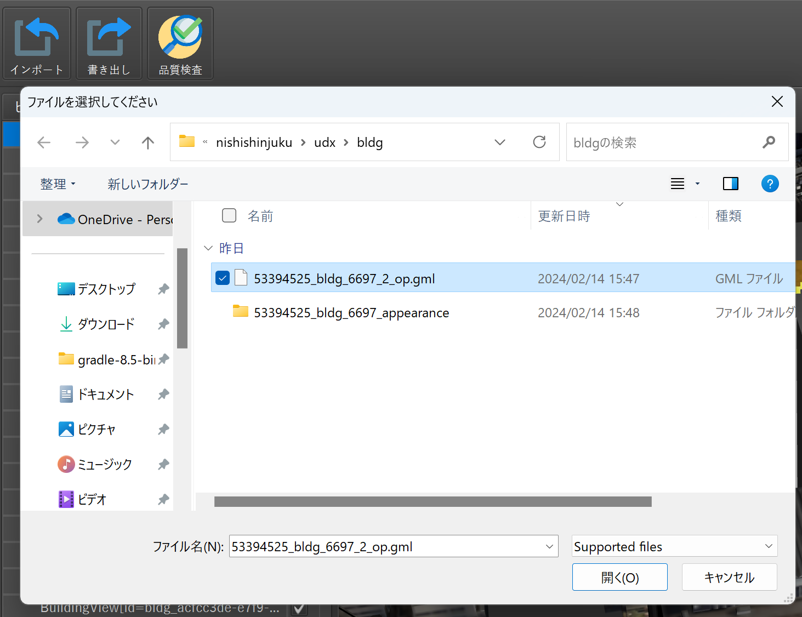
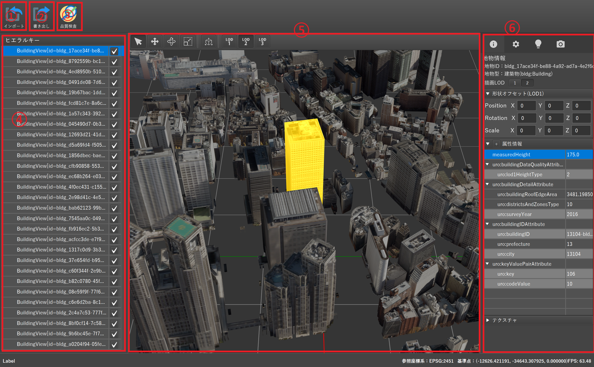
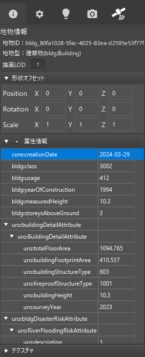

クイックスタート
本ページでは、PLATEAU Builder を初めて使用する方向けに、インストールからCityGMLをインポートして簡単に3D表示を行うまでの流れを紹介します。少ないステップでツールの概要を把握できるよう、最低限必要な操作に絞って解説しています。
1. PLATEAU Builderの起動
リリースファイルのダウンロード
GitHubリポジトリのリリースページから最新版のリリースファイルを取得します。ファイルの展開と実行
ダウンロードしたzipを解凍し、フォルダ内にある.exeファイルをダブルクリックで起動します。トップ画面を確認
起動に成功すると、下図のようなトップ画面が表示されます。

2. CityGMLのインポート
- 「インポート」ボタンをクリック
- CityGMLファイルを選択
 - 座標系を指定してインポート
インポートが完了すると、下図のようにヒエラルキー（地物一覧）と3Dビューに地物が表示されます。

2-1. 3D都市モデルを視覚的に確認
3Dビュー上では以下の操作で視点を動かせます。
| 操作 | 説明 |
|---|---|
| 右クリック + ドラッグ | 視点回転 |
| ホイールボタン + ドラッグ | 視点移動 |
| マウスホイール回転 | ズームイン・アウト |
| 地物をダブルクリック | その地物へフォーカス（カメラ移動） |
2-2. 地物の属性情報を確認
地物一覧または3Dビュー上でオブジェクトを選択すると、画面右側に地物情報パネルが表示されます。
- 地物ID / 地物型など、CityGMLで定義されるメタ情報
- 属性情報（用途、階数、高さなど）
- LODやテクスチャ情報
ここでは、属性を読み取るだけでなく、後述の機能で編集・追記・削除なども可能です。詳細は「属性情報の編集」を参照してください。

3. 次のステップ
このクイックスタートでは、インポートして3Dビューで確認する最短ルートを紹介しました。続いて、以下の機能を使いこなすと、より高度な作業が可能になります。
- 地物のフィルタリング: 属性情報で検索して、必要なオブジェクトだけを表示
- 形状の編集: 地物の形状を外部ツールで編集して再インポート
- 属性情報の編集: 各種属性の追加・削除や CSVでの一括編集
- 品質検査: 面の閉合やLOD整合など、モデルの整合性をチェック
- データセットエクスポート: 編集後のデータをCityGML形式で書き出し
以上でクイックスタートは終了です。
引き続き他の機能を参照し、PLATEAU Builderを活用してください。